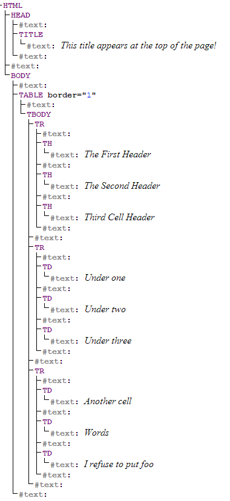

DOM
Unchanged from the last page, we have
<html>
<head>
<title>
This title appears at the top of the page!
</title>
</head>
<body>
<table border="1">
<tr>
<th>The First Header</th>
<th>The Second Header</th>
<th>Third Cell Header</th>
</tr>
<tr>
<td>Under one</td>
<td>Under two</td>
<td>Under three</td>
</tr>
<tr>
<td>Another cell</td>
<td>Words</td>
<td>I refuse to put foo</td>
</tr>
</table>
</body>
</html>
Instead of thinking of this as HTML tags, we could consider it a tree with HTML as the root. Under HTML would be HEAD and BODY, and so forth. Using a tool available at http://livedom.validator.nu/ we get a nice picture of the DOM tree for our page.

We can see that to get to the first TH tag, we need to traverse the tree like so:
HTML -> BODY -> TABLE -> TBODY -> TR -> TH.
If we add an id to the TABLE tag, like so,
<table border="1" id="my_table">
we can call it by name instead of some vague description.
With these basic ideas of HTML and the DOM, we are now ready to enter the world of Brython.